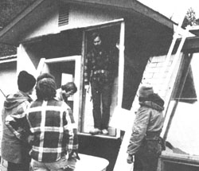
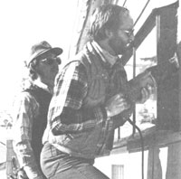

Would you rather be working at a job you can believe in . . . one in a field that's as sure to grow as fossil fuels are sure to be depleted . . . one that makes a difference? Maybe you should consider becoming a solar/renewable energy technician, a professional who installs, maintains, operates, and tests renewable energy systems and performs energy audits. But how does one learn the skills needed to do such a job or to prove his or her qualifications to potential employers and customers?
Chances are, there's a technical school or college in your region that can teach you what you need to know to get started. Across the country, such institutions are responding to the demand for qualified solar technicians by developing comprehensive training programs. In fact, the cry for competent solar practitioners is so strong that, in many cases, today's students of solar technology already have job offers when they graduate.
The entries that follow this introduction summarize the programs offered by a sampling of schools around the U.S. But before you pick one, you need to make a basic decision: How far do you intend to go with your solar education?
You'll notice that the listings are divided between training programs and two-year associate degree programs. Training programs, which provide a certificate of completion, are shorter, but they also tend to be more trade and less theory-oriented. For example, a two-year associate degree program might include courses in math and science to broaden your understanding of the principles of energy. What's more, that degree program will probably require that you take general education courses (English, for example), as well as the specifically career-related curriculum.
A training program may be more focused upon giving you the job skills needed to get started in the solar field. It will teach you what you need to know (and give you a certificate saying you've had the training) quickly. However, if you have the time to devote to a two-year degree, there are certain advantages to doing so. First of all, though this may sound obvious, a certificate isn't a degree. Consider what that means. A degree from an accredited college-with transcripts of courses and grades available for an employer's review-is a much stronger qualification to advance to (or even start at) a position beyond instal lation. Do you imagine yourself designing solar energy systems or managing teams of installers? If so, a degree could be helpful. Then too, if you ever decide to pursue a higher degree-perhaps solar engineering at Jordan Energy Institute, Trinity University, or some other four-year college-a two-year associate degree can be applied directly to the requirements for the more advanced training. Getting credit for certificate courses will be much more difficult.
So decide what your long-term goals are and review the listings-then write to some of the schools and request catalogs. There's still time to register for the fall semester and get started on your road to a new career.
Cabrillo College
6500 Soquel Dr.
Aptos, CA 95003
Attention: Dave Burton
408/425-6235
One-year Certificate: a program including solar thermal systems, photovoltaics, daylighting, conservation, energy auditing, hands-on system installation, and other renewable energy technologies.
Coastline Community College
11460 Warner Ave.
Fountain Valley, CA 92708-2597
Certificate in Energy Management: a program designed to train middle managers to evaluate energy needs and sources, make decisions on equipment purchases, do lighting design, and develop future energy plans. Consists of 24 standard credit hours plus electives.
Colorado Mountain College
3000 County Rd. 114
Glenwood Springs, CO 81601
Attention: Johnny Weiss
303/945-7481, ext. 208
One-year Solar Retrofit: 12-month (three-semester) program emphasizing the retrofit of greenhouses, sunspaces, domestic hotwater systems, and space-heating systems to existing buildings. Includes training in energy auditing.
Photovoltaic Systems: an intensive threeweek course on the installation and maintenance of stand-alone photovoltaic systems.
Edmonds Community College
20000 68th Ave. W.
Lynnwood, WA 98036
Attention: Terry Egnor
206/771-7406
One-year Certificate: a program including solar thermal systems, photovoltaics, daylighting, conservation, energy auditing, hands-on system installation, and other renewable energy technologies.
Essex County Technical Careers Center
91 W. Market St.
Newark, NJ 07103
Attention: W.R. Williams
Solar Systems: a 300-hour program on solar domestic hot-water, space-heating, and cooling systems.
Solar Systems Night Course: a 120-hour (over four semesters) program on solar collectors and domestic water- and space-heating systems.
Solar Heating and Water Systems: a 25-hour course; contact Carl Weininger, Essex County College, 730 Bloomfield Ave., West Caldwell, NJ 07006, 201/228-3971.
Florida Solar Energy Center
300 State Rd. 401
Cape Canaveral, FL 32920
Attention: Ken Sheinkopf
305/783-0300
Seminars on Solar Topics: numerous one-to three-day sessions on topics ranging from solar installation to research.
Jordan Energy Institute
155 Seven Mile Rd. N.W.
Comstock Park, MI 49321
616/784-7595
Energy Management Certificate: a 31-credit-hour, two-semester program in power production and energy management.
Seminars and Workshops: Over a dozen short sessions are offered each year on practical solar skills.
Macomb Community College
14500 Twelve Mile Rd.
Warren, MI 48093
Attention: Bob Tucker
313/445-7465
One-year Certificate: a program including solar thermal systems, photovoltaics, daylight ing, conservation, energy auditing, hands-on system installation, and other renewable energy technologies.
Mohawk Valley Community College
1101 Sherman Dr.
Utica, NY 13501
Solar Energy Certificate: a two-semester program of training in the installation and maintenance of solar thermal systems.
New England Fuel Institute
Solar Energy Education Division
20 Summer St.
P.O. Box 888
Watertown, MA 02172
617/924-1000
Solar Heating Installation and Maintenance: a 160-hour (four-week) course licensed by the Commonwealth of Massachusetts, Department of Education.
New Mexico State University
Box 3 SOL
Las Cruces, NM 88003
Attention: Paul Rowland
505/646-4104
One-year Certificate: a program including solar thermal systems, photovoltaics, conservation, energy auditing, and other renewable energy technologies.
NRI Air Conditioning, Refrigeration, & Heating School
3939 Wisconsin Ave. N.W.
Washington, DC 20016
NRI Master Course in Air Conditioning, Refrigeration, and Heating with Solar Technology: a 51-lesson correspondence course that includes six lessons in solar- and energy-related topics. It takes between 14 months and three years to complete.
Orange Coast College
P.O. Box 5005
Costa Mesa, CA 92628-0120
Attention: Marius Cucurny
714/432-0202
One-year Certificate: a program including solar thermal systems, photovoltaics, wind, conservation, energy auditing, and hands-on system installation.
Pensacola Junior College
Industrial-Technical Dept.
1000 College Blvd.
Pensacola, FL 32504
904/476-5410
Solar Energy Certificate: a one-year certificate course in the installation, operation, maintenance, repair, and testing of solar systems.
Red Rocks Community College
12600 W. 6th Ave.
Golden, CO 80401
303/988-6160
Solar Energy Installation and Maintenance: Courses in the two-year certificate or associate degree programs may be taken without entering a degree program.
Passive Solar Design: Same as above.
Sierra College
5000 Rocklin Rd.
Rocklin, CA 95677
Attention: Ken Weger
916/624-3333
One-year Certificate: a program including solar thermal systems, photovoltaics, daylighting, conservation, energy auditing, hands-on system installation, and other renewable energy technologies.
Southwestern Technical College
275 Webster Rd.
Sylva, NC 28779-9578
Attention: Dr. Greg Olsen or
Dr. Glenn Liming
704/586-4091
Seminars and Short Courses: STC periodically offers one- to three-week short courses as a supplement to its degree program.
TWO-YEAR
DEGREE PROGRAMS
Cabrillo College
6500 Soquel Dr.
Aptos, CA 95003
Attention: Dave Burton
408/425-6235
Associate Degree Program: includes solar thermal systems, photovoltaics, daylighting, conservation, energy auditing, handson installation, and other renewable energy technologies.
Colorado Technical College
655 Elkton Dr.
Colorado Springs, CO 80907
Solar Engineering Technology: a two-year associate degree program in solar theory and design that can be extended to a four-year bachelor of science degree.
Community College of
Allegheny County
Physics Dept.
808 Ridge Ave.
Pittsburgh, PA 15212
412/237-2667
Energy Technology/Physics: an associate degree program emphasizing solar energy, energy auditing, fossil fuels, and energy physics.
Edmonds Community College
20000 68th Ave. W.
Lynnwood, WA 98036
Attention: Terry Egnor
206/771-7406
Associate Degree Program: includes solar thermal systems, photovoltaics, daylighting, conservation, energy auditing, hands-on system installation, and other renewable-energy technologies.
Jordan Energy Institute
155 Seven Mile Rd. N.W.
Comstock Park, MI 49321
616/784-7595
Renewable Energy Technology: Training in the theory and use of renewable energy technologies leads to an associate degree in Applied Science.
Macomb Community College
14500 Twelve Mile Rd.
Warren, MI 48093
Attention: Bob Tucker
313/445-7465
Associate Degree Program: includes solar thermal systems, photovoltaics, energy auditing, conservation, hands-on system installation, and other renewable energy technologies.
Mohawk Valley Community College
1101 Sherman Dr.
Utica, NY 13501
Air Conditioning Technology with Solar Option: associate degree program in active and passive solar energy theory and installation; includes photovoltaics.
Oakland Community College
Auburn Hills Campus
2900 Featherstone Rd.
Auburn Heights, MI 48057
Attention: Debra Rowe
313/853-3594
Alternate Energies Technology: an associate degree program with emphasis on your choice of energy management, systems design, solar architecture, business, or special interest areas.
How much you can earn as a graduate from a solar-technical or a two-year associate-degree program probably depends morc on your own initiative and inclination than it does on the education itself; still, the certificate or diploma does open the door to possibilities. When we asked the directors of some of the programs included in this article what their graduates were earning, we received answers indicating a wide range of compensation. Some graduates are working on construction crews; individual wages vary from $4.75 per hour as a carpenter's apprentice in Maine to $8 an hour as an installer in North Carolina. One 22 yearold Colorado Mountain College graduate is already a foreman, making $12 per hour. Another is doing solar consulting work for $15 to $20 per hour. On the average, though, most graduates of training programs are employed by contractors doing solar installation work and are making $6 to $10 per hour. Two-year graduates, on the other hand, are more likely to be involved in directing such projects or working with consumers, and their pay is commensurately higher.
Orange Coast College
P.O. Box 5005
Costa Mesa, CA 92628-0120
Attention: Marius Cucurny
714/432-0202
Associate Degree Program: includes solar thermal systems, photovoltaics, wind, conservation, energy auditing, and hands-on system installation.
Red Rocks Community College
12600 W. 6th Ave.
Golden, CO 80401
303/988-6160
Solar Energy Installation and Maintenance: 63-credit-hour associate degree program including other general education requirements. It emphasizes hands-on experience and offers credit for skills in trades.
Passive Solar Design: 63-credit-hour associate degree program including other general education requirements. It overlaps some active-solar courses and includes drafting.
Sierra College
5000 Rocklin Rd.
Rocklin, CA 95677
Attention: Ken Weger
916/624-3333
Associate Degree Program: includes solar thermal systems, photovoltaics, daylighting, conservation, energy auditing, handson installation, and other renewable energy technologies.
Southwestern Technical College
275 Webster Rd.
Sylva, NC 28779-9578
Attention: Dr. Greg Olsen or
Dr. Glenn Liming
704/586-4091
Alternate Energy Technology: an associate degree program emphasizing solar and renewable energy applications, energy conservation, and installation; includes general education requirements.
OTHER
Sonoma State University
School of Environmental Studies
and Planning
Rohnert Park, CA 94928
Attention: W.J. (Rocky) Rohwedder
707/664-2863
Energy Management and Design: a certificate program that covers active and passive solar applications and energy management for those already holding or pursuing a bachelor's degree.
|
 Dr. Greg Olsen instructs Southwestern Technical College students in techniques of greenhouse retrofit. The students spend about 30% of their time doing actual construction work, such as on this greenhouse that's being added to the Big Y Community Club in Cherokee, North Carolina. The Save the Children Foundation supplied money for materials, and the project is coordinated by Sequoyah Driver (Big Y Chairman) and Dean Suagee (Energy Planner for the Eastern Bank of the Cherokee Indians Tribal Renewable Energy Assistance and Planning Program). |
 Students in the Colorado Mountain College solar retrofit program-an intensive one year course of study-are installing a solar hot-air system on a home in Glenwood Springs, Colorado. |
|